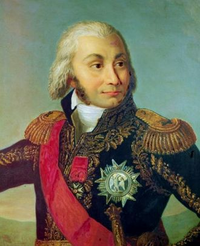
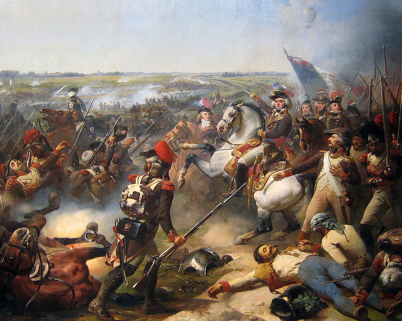
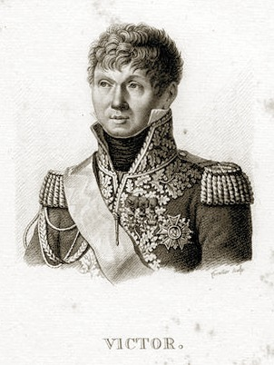

왕과 원수들 - 탈라베라 전투 (2편)
게시: 2018-03-04T00:12:54+09:00
1809년 7월 27일, 탈라베라에 모인 프랑스군의 주요 지휘관들은 제1 군단장 빅토르 원수, 제4 군단장 세바스티아니 장군, 그리고 조제프 국왕을 보좌하는 주르당 원수의 3명이었습니다. 명목상으로는 총사령관은 조제프 국왕 본인이었습니다만, 아무도 그에게서 전략이나 지휘를 기대하지는 않았지요. 세 명의 장군들 중에서 가장 전투 경험이 많고 능력이 뛰어난 사람은 빅토르 원수였습니다. 세바스티아니는 원수가 아니었으므로 계급도 낮았지만, 사실 군인이라기보다는 외교관 및 행정 관료라고 할 수 있었지요. 문제는 주르당(Jean-Baptiste Jourdan) 원수였습니다.

(외과의사의 아들로 태어난 주르당은 16살에 사병으로 입대하여 미국 독립전쟁에도 참전했고, 프랑스령 서인도제도에서도 복무하는 등 험한 곳을 돌아다닌 뒤, 서인도제도에서 얻은 말라리아로 건강을 해친 채 귀국했습니다. 결국 건강 문제로 제대를 한 그는 고향인 리모쥬에서 잡화점을 하는 등 평범한 서민 생활을 했습니다. 그의 인생을 바꿔놓은 것은 제대한 지 5년 뒤 터진 1789년 프랑스 대혁명이었습니다.)
주르당은 당시 47세로서 장군으로서는 한창 나이였고, 빅토르보다는 2년 연상이었을 뿐만 아니라, 특히 국민개병제를 법제화하여 프랑스군을 유럽 최강으로 만들어준 징집제의 창시자로 유명했습니다. 그의 징집제는 흔히 주르당 법(Loi Jourdan de 1798)으로 불릴 정도로 그의 명성은 대단했습니다. 그 때문에 그는 나폴레옹의 대관식 때 원수로 임명된 원년 원수 그룹 멤버가 되었지요. 그에 비해 빅토르는 3년 뒤인 1807년 당시 제1 군단장이던 베르나도트의 부상으로 인해 임시 군단장이 되었다가 프리틀란트 전투에서 맹활약을 한 덕분에 간신히 원수가 되었지요.
하지만 선임자가 꼭 능력치가 더 높은 것은 아니었습니다. 주르당이나 빅토르나 모두 대혁명 이전에 사병으로 군에 입대했다가 제대한 뒤, 대혁명 발발 뒤에 자원병으로 다시 입대하여 장교로 선발된 뒤 승승장구하여 장군 계급까지 승진한 역전의 용사였습니다. 그러나 주르당은 알고 보면 명성에 비해 그다지 뛰어난 전과는 별로 없는 군인이었습니다. 가령 1796년 모로가 중앙을, 나폴레옹이 우익인 이탈리아 방면을 맡을 때 주르당은 좌익을 맡아 바이에른 방면을 공략했는데, 당시 나폴레옹만 성공했을 뿐 독일 지역에서의 공세는 카알 대공에게 분쇄되었습니다. 그때 모로까지 후퇴하게 된 원인이 바로 주르당이었습니다. 암베르크(Amberg) 전투에서 주르당이 카알 대공에게 철저히 패배했기 때문에 모로의 측면이 노출되어 부득이하게 모로도 후퇴했던 것이지요. 그때 패배의 책임을 지고 주르당은 군문에서 물러나 정치에 입문했는데, 그때 만든 것이 1798년의 주르당 법이었습니다. 1799년 그는 다시 군에 기용되어 다시 라인 방면군을 맡았지만, 이번에도 다시 카알 대공에게 패배하며 체면을 구긴 바 있었습니다. 그때도 책임을 지고 지휘권을 부하에게 넘기고는 물러났는데, 그 부하가 바로 나폴레옹 군문에서 2인자라 할 수 있는 마세나였습니다. 마세나는 주르당이 이끌던 바로 그 군대를 넘겨 받아 눈부신 활약을 펼쳐 주르당을 더욱 머쓱하게 만들었습니다.

(패전을 거듭했던 주르당이 명성을 떨쳤던 것은 프랑스군이 연전연패하던 혁명 초기 혼란 속에서 그래도 소중한 승리를 거두기도 했기 때문입니다. 그림 속의 1794년 네덜란드에서 오스트리아군을 무찌른 플레뤼스 Fleurus 전투가 그의 대표적인 승전이었습니다. 그러나 그것도 알고 보면 그의 지휘가 뛰어나서 승리한 것은 아니었습니다. 그림 상단 오른쪽에 희미하게 프랑스군의 기구가 보이실 겁니다. 플레뤼스 전투는 기구를 군사정찰용으로 사용한 최초의 전투였습니다.)
특히 그는 1799년 나폴레옹이 일으킨 브뤼메르 쿠데타에 대한 반대파에 속한 사람이었습니다. 그때 500인 위원회에 속한 의원들을 나폴레옹의 척탄병들이 두들겨 패며 생 끌뤼(Saint Cloud) 궁에서 쫓아낸 바 있었는데, 그 중 하나가 바로 주르당이었던 것입니다. 그러나 워낙 명성이 자자한 군인인데다 정치인이기도 했으므로, 대승적 차원에서 나폴레옹은 그를 1804년 황제 즉위와 동시에 주르당을 원수로 임명했던 것이지요.
그런 그를 나폴레옹이 중용할 리가 없었습니다. 나폴레옹은 그를 이미 평정하여 별 문제가 없던 이탈리아 왕국에 군사 고문으로, 즉 한직에 보냈습니다. 그런데 바로 그 남쪽인 나폴리 왕국의 국왕으로 나폴레옹의 형 조제프가 즉위하면서 주르당이 그 군사 고문으로 함께 가게 되었고, 이때부터 조제프의 옆을 주르당이 지켰습니다. 모든 권력은 권력자의 곁에 착 달라 붙은 사람들이 쥐게 됩니다. 주르당의 경우가 바로 그랬습니다. 특히 조제프는 주르당에게 의지하는 바가 컸습니다. 조제프는 자신에게 별 능력이 없다는 것을 잘 알고 있었기 때문에, 주변에 명성과 능력을 갖춘 진짜 인물이 있기를 바랬습니다. 하지만 당시 쟁쟁한 실력자들은 다들 나폴레옹 밑에 있기를 원했지, 바보 형 노릇을 하던 조제프의 밑으로 오려는 사람은 없었습니다. 그러나 주르당은 달랐지요. 그렇게 나폴레옹에게 등한시되던 두 인물 조제프와 주르당은 서로에게 의지하며 왕국을 지배한답시고 나름 으시댈 수 있었습니다.
지방 농민들의 반란 외에는 별 문제가 없던 나폴리 왕국에서는 사실 별 문제가 없었습니다. 그런데 조제프가 스페인 국왕으로 자리를 옮기면서 문제가 심각해졌습니다. 주르당은 이번에도 조제프의 옆에 착 달라붙어 스페인까지 따라 왔는데, 스페인은 온나라가 반란에 휩싸인 험악한 분위기였습니다. 주르당은 이번에야말로 자신의 진가를 발휘하겠다며 오히려 좋아했을지 모르겠습니다. 그러나 현실은 냉혹했습니다. 당시 스페인 내에서 작전 중이던 7개의 프랑스 군단들과 그 군단장들은 명목상으로는 모두 주르당의 조언을 받는 조제프의 지휘를 받아야 했습니다. 그러나 그건 정말 명목상의 이야기였습니다. 호랑이같은 군단장들은 모두 나폴레옹을 두려워하고 나폴레옹의 인정을 받기 위해 노력할 뿐, 그의 바보 형 조제프는 그야먈로 바보 형 취급을 했습니다. 심지어 술트 같은 경우 아예 자신이 포르투갈 왕이 되려는 계획까지 세울 정도였으니까요. 주르당에 대해서도 '주르당이 언제적 주르당이냐'라는 식의 무시로 일관했습니다. 당연히 조제프와 주르당은 나폴레옹의 부하들에게 분함을 느끼고 있었습니다. 이번에 탈라베라까지 조제프와 주르당이 직접 마드리드 수비대까지 총동원하여 마드리드를 텅 비워둔 채 달려나온 것도 이번에야 말로 위아래 질서를 세우고 스페인 국왕의 위엄을 보여주려는 것도 아마 있었을 것입니다.

(빅토르 원수입니다. 그도 16살에 사병으로 입대한 주르당처럼 18살에 사병으로 입대했다가 10년 복무 기간을 다 채우고 만기 제대하여 평범한 서민 생활을 했습니다. 역시 프랑스 대혁명 때 자원병으로 재입대하여 장교가 되었지요. 1793년 나폴레옹의 출세 계기가 된 툴롱 포위전이 승리로 끝난 뒤, 나폴레옹과 함께 장군 계급으로 승진한 사람 중에 빅토르도 있었습니다. 나중에 마렝고 전투에서 공을 세우며 나폴레옹의 눈에 들게 됩니다.)
실제로 탈라베라에 빅토르의 제1 군단과 세바스티아니의 제2 군단, 거기에 예비 기병대와 마드리드 수비대까지 집결하자, 아무래도 3개 세력 간에 지휘 체계를 분명히 할 필요가 있었습니다. 군사작전에서 부대마다 명령 체계가 제각각이면 그야말로 오합지졸이 될 테니까요. 나폴레옹의 부하들이 제아무리 잘 났고 전장에서의 실력이 뛰어나다고 해도, 이렇게 같은 천막 아래에서 얼굴을 맞대니 의전상 바보 형 조제프의 머리 위에 얹힌 왕관의 무게를 인정하지 않을 수 없었습니다. 빅토르와 세바스티아니는 조제프 앞에서 고개를 숙이고 왕 대접을 해야 했고, 자연스럽게 전체 작전의 지휘권은 조제프의 뒤에 선 주르당에게 돌아갔습니다. 이 상황에서, 외교관 생활을 오래 하여 의전에 익숙했던 세바스티아니는 몰라도 전형적인 무골이었던 빅토르는 속이 부글부글 끓었을 것입니다. 그리고 이 갈등이 그렇쟎아도 수적으로 불리한 프랑스군의 위치를 더욱 거북하게 만들었습니다.
이렇게 갈등으로 점철된 프랑스군에 비해 영국-스페인 연합군은 혈맹답게 분위기가 좋았을까요 ? 천만에 콩떡이었습니다. 그 이야기는 다음 기회에 보시지요.
Source : https://www.bbc.co.uk/radio4/wellington/talavera_pop.shtml
https://en.wikipedia.org/wiki/Jean-Baptiste_Jourdan
http://www.worcestershireregiment.com/wr.php?main=inc/h_talavera
http://www.napoleon-series.org/military/battles/1809/Peninsula/talavera/c_talaveraoob.html
http://www.historyofwar.org/articles/battles_talavera.html
http://www.historyofwar.org/articles/campaign_talavera.html
https://en.wikipedia.org/wiki/Battle_of_Talavera